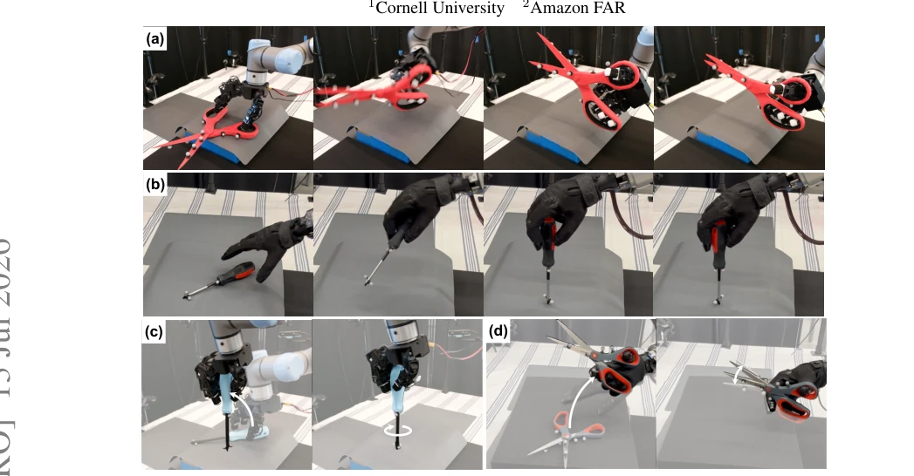
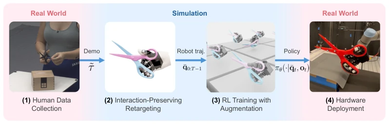
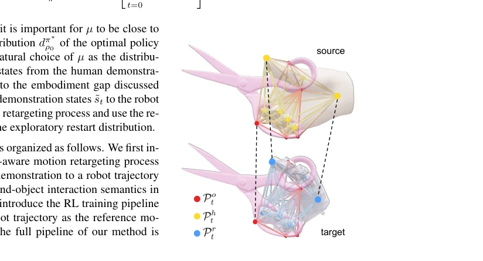
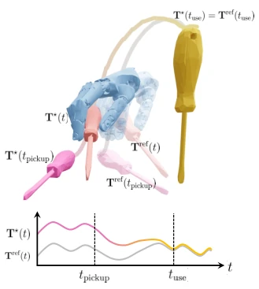
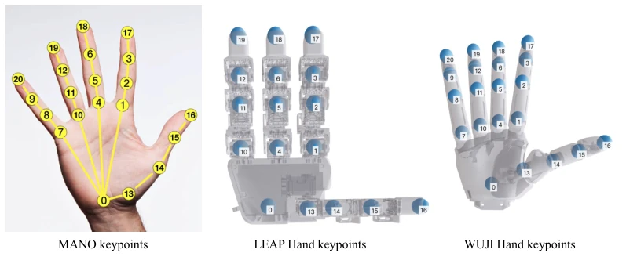
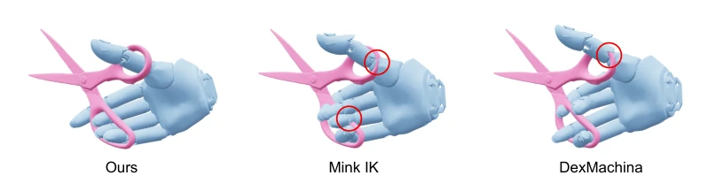
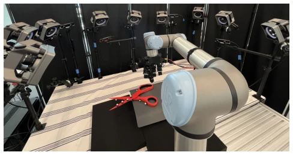
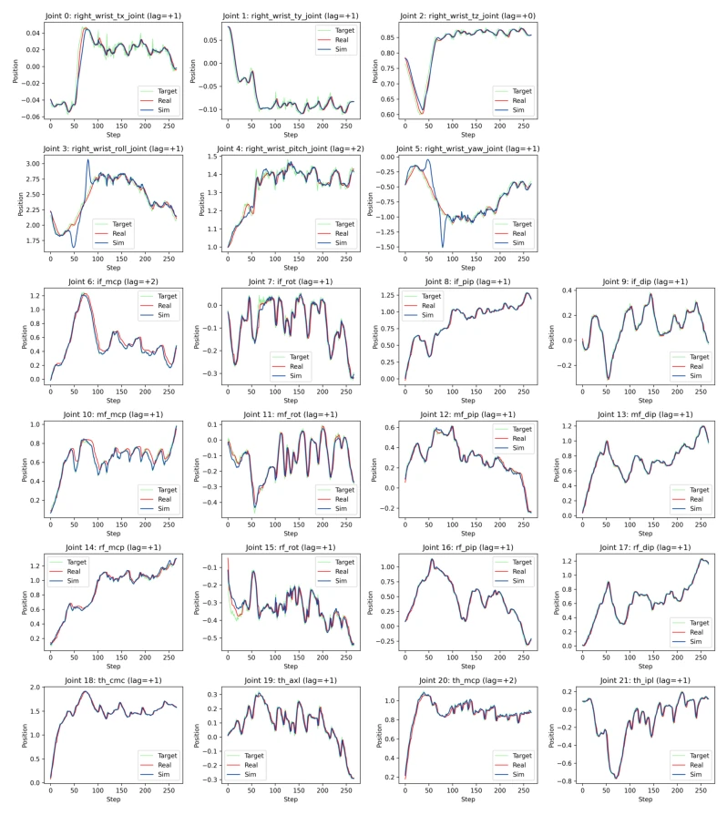

This paper attempts to solve the most challenging Sim-to-Real gap in dexterous manipulation using "minimalism". REGRIND's core logic is actually not new: redirect human actions to robots, then fine-tune with RL. But its cleverness lies in "interaction-aware" retargeting, unlike traditional IK which only cares about hand position ignoring object contact, leading to physical infeasibility. Experimentally, it indeed successfully executed on scissors and screwdriver tasks, especially the performance of the LEAP hand was impressive. However, do not celebrate too early; deployment still relies on motion capture systems to provide object states, meaning it has not fully shaken off "simulation dependency", still far from true visual end-to-end. Additionally, the WUJI scissors task failure exposed the critical flaws of non-backdrivable motors and model errors. Overall, this is a "recipe" for engineers, not a theoretical breakthrough, but wins in practicality, and code open source is generous enough. It proves that in contact-rich tasks, maintaining interaction semantics is more important than simply mimicking kinematic trajectories, although this does not solve perception problems, it significantly helps reduce RL training difficulty, counting as handing a crutch to researchers who hit a wall on real machines.
The core difficulty of dexterous manipulation lies in contact-rich dynamics and fine force control; simply imitating human actions often fails due to "embodiment differences". Although the retargeting+RL recipe is already mature in humanoid full-body control [1, 2], it does not adapt well to dexterous hands. Existing methods either rely on expensive real-machine teleoperation data [3, 4, 5], or cannot transfer after training in simulation [6, 7]. Especially methods like DexMachina [7], although attempting functional retargeting, often ignore hand-object interaction geometric constraints, leading to generated trajectories being physically infeasible (e.g., fingers penetrating objects), making RL strategies difficult to converge. This paper questions: If interaction semantics are preserved during the retargeting stage, can downstream RL performance be improved? This directly targets the problem of Sim-to-Real being extremely sensitive to modeling errors in contact-rich tasks.

Figure 1: Dexterous Tool Use Tasks. We present a minimalist retargeting-guided RL pipeline for learning dexterous manipulation from a single human demonstration. We evaluate our method on four contact-rich task-hand settings across two robot hands: (a) LEAP-Scissors, (b) WUJI-Screwdriver, (c) LEAP-Screwdriver, and (d) WUJI-Scissors.
The overall process follows the Real-to-Sim-to-Real paradigm. First, through interaction-aware motion retargeting, human demonstrations (MANO keypoints + object pose) are converted to robot trajectories. Unlike traditional IK, this method constructs an Interaction Mesh, minimizing Laplacian coordinate deformation energy between the source grid (human + object) and target grid (robot + object), ensuring hand-object contact relationships remain physically reasonable after retargeting. Second, train residual RL policies in simulation, action space is residual relative to reference trajectory, observations include object pose, robot proprioception, and phase variables. Reward function based on keypoint distance, implicitly encoding interaction priors. To solve the problem of insufficient single demonstration data, dynamic data augmentation is introduced: random perturbation of initial object pose, and generating new reference trajectories through rigid transform interpolation, rather than re-solving retargeting optimization. Finally, achieve zero-shot transfer through system identification and domain randomization. The key innovation lies in front-loading interaction constraints to the retargeting stage, rather than relying on RL to explore contact patterns on its own, significantly reducing the difficulty of reward engineering.

Figure 2: Method Overview. We follow a real-to-sim-to-real pipeline to learn an RL policy from 3D human data. (1) Given a human demonstration with hand and object poses, we (2) retarget it to the robot with interaction-aware motion retargeting, (3) train a policy to track the retargeted trajectory with large-scale RL in simulation, and then (4) transfer the policy zero-shot to the real world. We dynamically augment the reference trajectory during RL training to make the policy generalizable to different initial configurations.

Figure 3: Interaction meshes. We construct the source interaction mesh with the object and hand keypoints in the demonstration (top), and the tar- get interaction mesh with the same ob- ject keypoints and the robot keypoints that correspond to the hand keypoints (bottom). The dashed lines connect the corresponding keypoints in the two meshes.

Figure 4: Data augmentation. Tref and T⋆denote the original and augmented retargeted trajectory, respectively. T⋆ is interpolated towards Tref between the timestep tpickup (when the object is picked up) and the timestep tuse (when the subject starts to use the tool at a target position). See Appendix B.3 for more details.

Figure 6: Hand keypoint correspondence. MANO human hand keypoints and the corresponding robot keypoints on the LEAP hand and WUJI hand.
Experiments are evaluated on scissors and screwdriver tasks, involving LEAP and WUJI two types of hands. Baselines include SPIDER [41], DexMachina [7], and Mink IK. In simulation, REGRIND is close to 100% in success rate, tracking error significantly lower than baselines. During real machine transfer, LEAP hand and WUJI screwdriver task succeeded, but WUJI scissors task failed, attributed to motor non-backdrivable characteristics and model errors. DexMachina performed passably in simulation, but real machine transfer was extremely poor, indicating lack of interaction constraints led to strategy overfitting simulation artifacts. Ablation experiments show data augmentation significantly improved generalization capability, able to cope with random initial states. Results indicate that interaction-aware retargeting is the key to Sim-to-Real success, but system identification and physical parameter calibration are equally indispensable.

Figure 5: Qualitative Retargeting Results. Sample retargeted configurations produced by our method, Mink IK, and DexMachina for the WUJI-Scissors task. Our method produces a human- like grasp that preserves the hand-object interaction semantics, while the other two baselines produce physically implausible or unstable grasps that are not suitable for RL training. The red circles highlight significant hand-object penetrations.

Figure 8: Real-World Robot System.

Figure 9: Response curves for system identification. Green: desired joint position; Red: real-robot response; Blue: simulated response.